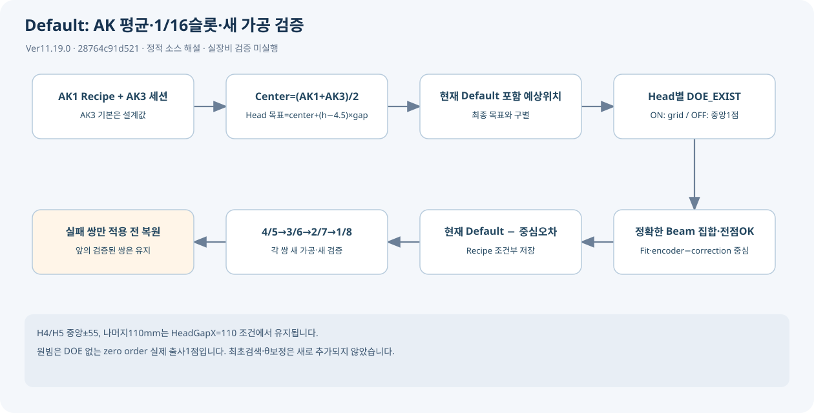

Default Offset·Zero Order·First Beam: AK 중앙·DOE 슬롯·복원 범위

원본: kjuws10-rgb/A3Drilling · master · 96e22cd027c84bf302b23f2949b98985d7f301bb · Ver11.17.0
현재 재검토: 11.17.0 / 2026-11-18, 비교 기준 11.13.0(dfa5920e6301d9ec4b0eab1452ae59521aafc986). 아래 변경 항목과 기존 잔건을 구분합니다. 파일·함수·호출 경계의 정적 확인이며 장비 실행 시험 결과가 아닙니다.
이 장은 이전11.10.0의 “중앙은 설계치만 사용, Shot16점/Cross1점” 설명을 새 구현으로 대체합니다. 실제 함수와 호출자를 정적으로 읽었습니다. 실장비 이동·레이저 가공·AeroScript·벤더 DLL을 실행하지 않았으며, 아래 시험은 실행 계획입니다. 숫자 예시는 설명용 가상값입니다.
1. 먼저 구분해야 하는 다섯 값
| 이름 | 현재 코드에서의 뜻 | 서로 혼동하면 생기는 문제 |
|---|
| AK1 Review X | Recipe의 REVIEW_CAMERA_ALIGN_KEY_POS_X | 지금 새로 측정한 좌표로 오인 |
| AK3 Review X | 기본은 설계 계산값, 조건창에서 세션값으로 변경 가능 | 수동 입력을 자동 촬영·검증으로 오인 |
| BoardCenterX | 조건에 적용한 두 Review X의 정확한 평균 | global X/Y 기판 회전 피팅으로 과장 |
| Head Default | 모든 해당 Head Shot에 쓰는 기본 보정 | 평가용 Beam11 추가 이동량과 혼합 |
| First Beam Offset | Default와 독립된 X/Y 추가 offset | Zero Order calibration 자체로 오인 |
11.13.0에서 AK3를 실측 encoder 값으로 입력할 수 있는 세션 경로가 추가되었고 이번에도 유지합니다. Conditions 함수가 매번 AK1/AK3를 새로 촬영하거나 PLC의 글로벌 AK4점을 가져오는 것은 아닙니다. CDefaultOffsetCalibration.cs:65–91 [오프라인 파일 해설] CDefaultOffsetView.xaml.cs:78–112 [오프라인 파일 해설] CDefaultOffsetView.xaml.cs:176–192 [오프라인 파일 해설]
~~~mermaid
flowchart TD
A[Recipe AK1 Review X] --> C[AK1과 AK3 Review X의 평균]
B[AK3 설계 계산 또는 조건창 입력] --> C
C --> T[각 Head의 고정 목표 중심]
F[현재 Default와 탐색 teaching] --> M[예상 마크 위치로 이동]
M --> D[DOE 1개 또는16개 슬롯 Capture]
D --> V[완전한 슬롯 집합과 Fit 검사]
V --> E[encoder와 보정으로 실측 중심]
T --> G[실측 중심과 목표의 차이]
E --> G
G --> R[현재 Default에서 오차 차감]
R --> P[Recipe 조건부 저장]
P --> Q[새 가공과 새 측정으로 재검증]
Q --> N[성공한 쌍 유지하고 다음 쌍]
Q --> X[실패한 쌍만 적용 전으로 복원]
~~~
2. 측정 조건창의 실제 조작 흐름
1. Default 측정 조건에서 현재 Recipe와 Setting을 합칩니다. 이 helper는 Setting을 먼저 넣고 Recipe가 같은 키를 덮습니다.
2. AK1은 Recipe 값으로 읽기 전용입니다. AK3는 편집 가능하고 “설계값 계산”을 누르면 AK1+GlassSizeX−2×AK_MARGIN_X로 되돌립니다. 이 버튼은 encoder 현재값을 채집하지 않습니다.
3. Stage Y, 기준 모델, Shot/십자 가공, 십자 길이를 정합니다. Vision 방식은 Shot이면 Mark Find Single, 십자이면 Mark Find Setting Single로 자동 정해집니다.
4. 두 X의 평균을 미리 보여 주고 조건 적용 시 유한값·양수 tolerance·AK1≠AK3·지원 DOE 크기·십자 양수 길이를 검증합니다.
5. 이전 조건을 다시 열면 AK3 세션값과 가공 방식/길이를 유지하는 분기가 있습니다. 실제 Recipe가 바뀌었을 때 이 값의 출처도 다시 확인해야 합니다.
6. 조건 적용은 측정 run을 준비합니다. Head Default 추천값을 Recipe에 저장하는 APPLY와 다른 단계입니다.
CDefaultOffsetCalibration.cs:14–19 [오프라인 파일 해설] CDefaultOffsetCalibration.cs:133–144 [오프라인 파일 해설] CMenuCorrection.cs:3178–3203 [오프라인 파일 해설] CDefaultOffsetView.xaml.cs:78–147 [오프라인 파일 해설] CDefaultOffsetView.xaml.cs:176–194 [오프라인 파일 해설]
조건창은 “실측 중앙”이라고 표시하지만 AK3가 설계 fallback인지 실제 encoder 값을 사람이 확인해 넣었는지 구분하는 전용 provenance 플래그는 Options에 없습니다. 따라서 표시 문구만으로 새 실측 중앙이라고 인증해서는 안 됩니다. Options에 남는 것은 두 X, Stage Y, tolerance, mode, cross size, DOE grid 크기입니다. CDefaultOffsetCalibration.cs:301–324 [오프라인 파일 해설]
3. 중앙과 Head 목표: ±55/110의 조건
~~~text
AK3_design_X = AK1_X + GlassSizeX − 2 × AK_MARGIN_X
Center_X = (Options.AK1_X + Options.AK3_X) / 2
Target_X(h) = Center_X + (h − 4.5) × HeadGapX
Target_Y(h) = Test_Q − StageDirection × HeadGapY(h)
~~~
HeadGapX가110 mm일 때 H4/H5는 중앙에서−55/+55 mm입니다. H1..8 상대 X는 각각−385,−275,−165,−55,+55,+165,+275,+385 mm입니다. 이는 110 mm라는 설정을 넣었을 때의 계산이지 현재 설비값을 문서에 가져온 것이 아닙니다. odd/even Head의 Y 행 간격도 별도 사용합니다. CDefaultOffsetCalibration.cs:243–267 [오프라인 파일 해설]
가상 AK1=100, AK3=900이면 중앙500입니다. AK3 입력만902로 바꾸면 중앙501이고 모든 Head 목표 X가1 mm 이동합니다. H4 측정만 바꾸어도 H3 목표가 이어서 바뀌는 구조는 아닙니다. 짝별 실행 순서는4/5→3/6→2/7→1/8이지만 앞 쌍 실측을 다음 쌍의 전역 중앙으로 삼는 연쇄 calibration이 아닙니다. CDefaultOffsetCalibration.cs:240–256 [오프라인 파일 해설] CMenuCorrection.cs:3354–3368 [오프라인 파일 해설]
AK3 설계 fallback을 그대로 쓰면 평균은 이전의 AK1+GlassSizeX/2−AK_MARGIN_X와 같습니다. 반면 사람이 입력한 AK3를 쓰면 새 평균이 적용됩니다. 따라서 이전 설명의 “항상 설계중앙만 사용한다”는 문장은 현재에 맞지 않으며, “항상 두 점을 자동 새 측정한다”는 문장도 맞지 않습니다.
이 기능은 X 두 값의 평균입니다. AK1/AK3의 global Y 차이, 두 점 선의 atan2 회전, 기판의2D 중심/자세는 계산하지 않습니다. Distortion의 AK4점 수신·보간과 이 옵션 평균을 같은 계산으로 취급하지 않습니다.
4. 11.17.0: Head별 DOE 장착 여부와 검사 개수
11.13.0 전역 grid1/4 검사에 H01_DOE_EXIST~H08_DOE_EXIST OPTION이 추가됐습니다. Head1~8에 ON/1/TRUE·OFF/0/FALSE를 해석하고 키 누락/다른 문자열은 예외입니다. 조건창·가공 설명·검사 루프·미리보기·로그가 같은 Head 설정을 읽습니다. CDefaultOffsetCalibration.cs:29–60 [오프라인 파일 해설] CMenuCorrection.cs:3190–3198 [오프라인 파일 해설] CMenuCorrection.cs:3792–3815 [오프라인 파일 해설]
| Head 설정 | Recipe grid | 실제 검사 | 의미 |
|---|
| DOE ON | 4 | Beam1~16, pitch/angle 사용 | DOE 배열 Fit 중심 |
| DOE ON | 1 | 중심1점 | 지원 전역 grid 유지 |
| DOE OFF | 4 또는1 | 중앙1점, pitch0/angle0 | 실제 원빔 출사 위치 |
| OFF + Cross | 4 또는1 | 중앙 십자1회 SettingSingle | 16형상을 가정하지 않음 |
| ON + Cross/grid4 | 4 | 슬롯별 십자16회 | scanner 중심 십자를 DOE가 분기 |
OFF이면 DefaultInspectionGridSize=1이고 Capture/Fit도1점입니다. 십자 전체 길이는−L/2~+L/2이고 Shot/Cross가 DOE 유무를 바꾸는 스위치는 아닙니다. DOE16점 가상 중심과 원빔 실제 위치 모두 같은 Zero Order 기준 Head 목표에 맞춥니다. 이전의 “Head별 혼합 DOE 미확인” 설명은 Default 검사 범위에서 대체됩니다. CDefaultOffsetCalibration.cs:43–60 [오프라인 파일 해설] CDefaultOffsetCalibration.cs:145–210 [오프라인 파일 해설] CMenuCorrection.cs:3792–3815 [오프라인 파일 해설]
범위: DOE_EXIST는 Default 검사만 바꿉니다. 주석은 일반 가공·다른 Review 모드의 사용자 Beam을 유지한다고 명시하고 일반 Beam builder도 flag를 읽지 않습니다. 원빔을 평가용11번 위치로 옮기는 FirstBeam 정책까지 자동 생성됐다고 해석할 수 없습니다. CDefaultOffsetCalibration.cs:43–48 [오프라인 파일 해설] CReviewManager.cs:1379–1408 [오프라인 파일 해설]
5. 측정 예상 위치와 보정 목표 위치는 따로 계산한다
MeasureDefaultCenter의 예상 카메라 위치는 teaching 및 현재 Default를 더합니다. 적용 후 새 마크가 이동하므로 카메라가 그 위치를 따라가야 하기 때문입니다. 반면 원하는 Head 위치는2절의 AK 평균+Head 간격입니다. 탐색을 쉽게 하려는 teaching과 최종 목표를 같은 값으로 만들어서는 안 됩니다. CMenuCorrection.cs:3783–3814 [오프라인 파일 해설]
Capture는 이동 완료 후50ms를 기다리고, 요청 전후 encoder 위치가0.001 mm 넘게 바뀌면 거부합니다. Vision 픽셀의 Target−Hole를 cameraResolution×nResolution으로 mm 변환한 뒤 Vision Flip을 한 번 적용합니다. 이때 mark의 local 실측값은 slot−convertedError입니다. Stage/Review encoder 실측값도 함께 저장합니다. CReviewManager.cs:3181–3201 [오프라인 파일 해설]
~~~text
ActualCenterReviewX = Average(EncoderX − CorrectionX)
ActualCenterStageY = Average(EncoderY − StageDirection × CorrectionY)
CenterErrorX = ActualCenterReviewX − TargetReviewX
CenterErrorY = (ActualCenterStageY − TargetStageY) / StageDirection
~~~
WithHeadReference는1개 또는16개의 완전한 번호 집합을 요구합니다. 실제 배열 중심은 encoder−correction 평균을 사용하므로 명령 target만 평균하는 것과 다릅니다. local Fit의 중심과 stage/global 목표 대비 중심오차도 다른 값입니다. CDefaultOffsetCalibration.cs:243–267 [오프라인 파일 해설]
6. Fit과 추천이 허용하는 조건
Fit은 설정한 grid에 해당하는 정확한 개수와 Beam1..N 집합, 모든 Judge=OK, 유한한 local/raw/correction/encoder를 요구합니다.1빔은 그 한 점을 중심으로 반환하고 residual/pitchX/pitchY를0으로 둡니다.1점으로 회전·pitch를 검증했다는 뜻이 아닙니다. CDefaultOffsetCalibration.cs:196–209 [오프라인 파일 해설]
16빔은 평균 중심과 affine 격자 계수를 계산하고, 예상 DOE 각도/간격과의 격자 차이 및 최대 잔차가 tolerance 이하인지 확인합니다. 몇 점이 빠졌을 때 나머지 평균만으로 통과시키는 분기는 없습니다. tolerance는 Recipe Review X/Y 중 작은 값입니다. CDefaultOffsetCalibration.cs:210–237 [오프라인 파일 해설] CDefaultOffsetCalibration.cs:70–75 [오프라인 파일 해설]
Recommend는 지정된 USE Head 집합의 유효 결과가 모두 있어야 하며 nextDefault=Round(currentDefault−CenterError,5,AwayFromZero)를 계산합니다. 유한값과±100 mm를 확인하고 Head flip은 뒤의 scanner 변환에 맡깁니다. ±100 mm 숫자 허용범위와 실제 Scan Field 범위는 다른 경계입니다. CDefaultOffsetCalibration.cs:273–296 [오프라인 파일 해설]
실제 CENTER 명령은 Head transform 이후 X/Y가 Scan Field 반폭 안인지 검사합니다. Shot은 한 점, 십자는4끝점입니다. DOE 분기 간격을 scanner 축 이동범위에 그대로 넣는 구조가 아닙니다. CDefaultOffsetCalibration.cs:94–103 [오프라인 파일 해설] CDefaultOffsetCalibration.cs:125–162 [오프라인 파일 해설]
7. 적용·재검증·중단·복원을 단계별로 읽기
일괄 모드는 USE Head를4,5,3,6,2,7,1,8 순서로 가공한 뒤 전체 검사, 추천 계산, 일괄 APPLY, 새 가공 VERIFY를 분리합니다. 검증 실패/취소 때 적용한 값이 있으면 RestoreDefault로 이번 run에서 적용한 키들을 조건 적용 시점 값으로 돌립니다. CMenuCorrection.cs:3217–3242 [오프라인 파일 해설] CMenuCorrection.cs:3269–3329 [오프라인 파일 해설] CMenuCorrection.cs:3816–3837 [오프라인 파일 해설]
짝별 모드는4/5→3/6→2/7→1/8에서 USE Head만 골라 각 쌍의 가공→측정→추천→적용→새 가공→새 측정을 진행합니다. 모두 허용오차 이내면 해당 쌍 Verified를 확정합니다. 실패 쌍은 그 쌍 적용 전값만 복원하고 이미 검증된 앞 쌍은 유지합니다. 복원도 실패하면 원래 실패와 복원 실패를 함께 보고합니다. 짝별 실행 중 “복원했다”를 전체8 Head 원복으로 읽으면 안 됩니다. CMenuCorrection.cs:3354–3368 [오프라인 파일 해설] CMenuCorrection.cs:3389–3448 [오프라인 파일 해설]
Recipe/Setting이 바뀌면 EnsureDefaultSource가 기존 측정·추천 재사용을 거부합니다. CURRENT_PROCESS_COUNT 변경은 Recipe 비교에서 제외됩니다. 적용 저장은 SaveParametersIfUnchanged를 사용하고 로그 요청→Recipe 저장→run 상태 갱신의 순서를 갖습니다. 로그·Recipe·실물 마크 전체가 한 원자 transaction으로 되돌아가는 것은 아닙니다. CMenuCorrection.cs:3451–3469 [오프라인 파일 해설] CMenuCorrection.cs:3603–3617 [오프라인 파일 해설]
가공 전 GuardDefaultOperation은 AUTO/Manual MOF 실행·정리 미완료·Critical 알람을 차단합니다. 측정 전 Laser Off를 요청하고 그 요청 이후 신선한 축 snapshot의 raw output0을 최대5초 확인합니다. Default는 generic random Vision simulation을 쓰지 않고 연결된 응답을 요구합니다. 이러한 software 가드의 존재를 하드웨어 차단 성능·광학 합격으로 승격하지 않습니다. CMenuCorrection.cs:3597–3601 [오프라인 파일 해설] CMenuCorrection.cs:3758–3782 [오프라인 파일 해설] CReviewManager.cs:3138–3167 [오프라인 파일 해설]
8. DefaultZeroOrder와 FirstBeam·보정율의 역할
16빔 중심은 대칭 DOE 배열에서 얻는 가상 중심이며1빔 중심은 그 실제 한 마크입니다. 이 중심을 Head 기본 기하에 맞추려는 값이 Head Default입니다. FirstBeam은 별도 키로 최종 가공좌표에 추가됩니다. 원빔을 평가용 Beam11 위치로 옮기는 정책을 Default에 섞으면 기본 중심과 평가 이동을 혼동할 수 있습니다. CDefaultOffsetCalibration.cs:196–237 [오프라인 파일 해설] CShotCoordinatePlanBuilder.cs:59–65 [오프라인 파일 해설] CShotCoordinatePlanBuilder.cs:139–155 [오프라인 파일 해설]
최종 scanner는 RecipeOffset+HeadDefault+FirstBeam+scaled Review+scaled Align을 합칩니다. Review/Align 비율은 각각 현재 기여값에 곱하고 저장값을 바꾸지 않습니다. Default 세션의 중앙 입력, FirstBeam 추가값, ReviewOffset Rollback, Align 갱신을 하나의 APPLY/원복 기능으로 설명하지 않습니다. CShotCoordinatePlanBuilder.cs:139–155 [오프라인 파일 해설]
FINE와SIMPLE UI는 기본 선택 Beam을11로 바꾸되 해당 Recipe의 BeamNumbers에11이 없으면 가능한 첫 Beam으로 fallback합니다. 이 UI 기본값 변화가 전체 Head 광학 mode의1빔↔16빔 자동 대응을 구현한 것은 아닙니다. CMenuCorrection.cs:5984–5995 [오프라인 파일 해설] CMenuCorrection.cs:6117–6125 [오프라인 파일 해설] CMenuCorrection.cs:7218–7229 [오프라인 파일 해설] CMenuCorrection.cs:7282–7290 [오프라인 파일 해설]
9. 검증표: 계산·저장과 실기를 나눠 수행한다
| 단계 | 합성 입력/실패 주입 | 기대 확인 |
|---|
| 중앙 계산 | AK3 설계 fallback/입력값/같은값/NaN | 평균 변화, 같은값·비유한 거부, 자동촬영이라 표시하지 않음 |
| Head 목표 | 가상 HeadGapX110, H4 측정만 변경 | ±55/110 산식; 다른 Head 목표는 H4 실측을 연쇄 사용하지 않음 |
| DOE 분기 | grid1/4/2, pitch0/양수/비유한 | 지원1/4만 허용;1점은pitch0;4는양수 |
| Capture 개수 | Shot/Cross × DOE_EXIST ON/OFF × nominal grid1/4 | ON은 grid1/4에 따라1/16회, OFF는 nominal grid와 무관하게1회. Beam1..N이며 Cross Beam0 경로 없음 |
| Fit | 누락/중복/NG/격자회전/잔차 초과 | 추천 계산 전 명확히 거부 |
| 예상/목표 | 현재 Default 비영값으로 적용 전후 | 탐색 위치는 따라가고 AK 기준 목표는 고정 |
| 단일빔 | 실제 광학 원빔과grid1 | 한 점 수신 계약 확인,1점으로pitch/각도합격을 주장하지 않음 |
| 혼합 Head | DOE3+원빔5의 실제 구성 | 전역grid 한 값만으로 지원완료라 보고하지 않음 |
| 일괄 원복 | VERIFY 도중 실패/취소 | 이번run 적용키 전체의 원래값 확인 |
| 짝별 원복 | H3/6 적용 후 실패 | H3/6만 원복, H4/5 Verified 유지 |
| 저장 경합 | 측정 도중 Recipe/Setting 변경 | 기존 추천 재사용 차단 |
| 실기 | 작은±X/±Y·Head flip·Stage 방향 | 실제 마크이동/부호/횟수/레이저OFF를 별도 측정 |
이번 산출물에서 확인한 것은 source의 조건·산식·호출·저장 책임입니다. 실제 장비/광학 시험은 실행하지 않았습니다.
10. 저장 스키마·버전 확인과 검증
Default 로그는 DOE_ANGLE 뒤에 DOE_EXIST, DEFAULT_INSPECTION_POINT_COUNT를 추가합니다. 결과의 ON/OFF와 실제 Marks.Count입니다. 고정 열 번호보다 header 이름으로 읽어야 하고 일반 ReviewResult 변화와 혼동하지 않습니다. CAlignOffsetLogFile.cs:20–34 [오프라인 파일 해설]
| 시험 | 기대 관찰 | 범위 |
|---|
| DOE3개+원빔5개 | ON16/OFF1점과 log count | Default 전용 |
| ON/OFF 후 일반 Review | 선택 Beam 별도 유지 | flag 확장 해석 금지 |
| 키 누락·잘못된값 | 준비에서 명확한 예외 | 구형 설정 migration |
| 원빔 한 점 | residual/pitch0 | 회전·pitch 광학 검증 아님 |
| AK1/AK3 Y 차이 | X평균만 계산 | 2D 회전 피팅 아님 |
| H4/H5±55 / 나머지110 | HeadGapX110 가상 수식 | 실제 광학 합격과 분리 |
이력: AK3 세션 입력과4/5→3/6→2/7→1/8 짝별 복원은11.13.0부터 유지되며 이번에는 Head별 DOE 분기를 추가했습니다. 앞 쌍 실측으로 다음 쌍의 전역 중앙을 계속 옮기는 연쇄 보정은 아닙니다.